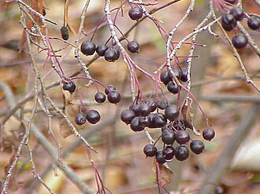

アロニアの生産量 都道府県ランキング
1位から3位までと、とれた量
アロニアが日本でいちばん多くとれるのは北海道です。10 tで、全国（10 t）の約 97%を占めます。

| 順位 | 都道府県 | 収穫量 | 全国に占める割合 |
|---|---|---|---|
| 1位 | 北海道 | 10 t | 約 97% |
| 2位 | 新潟県 | 1 t | 約 9.7% |
この数字について
- 分類：バラ科
- 全国の収穫量：10 t
- この数字が表すもの：収穫量（畑や田でとれた重さ）
- 調査：特産果樹生産動態等調査 令和5年産
- この品目は統計に上位3産地しか載っていません。4位以下は国が公表していないため分かりません。
- 産地の量は1t単位に丸めて公表されています（全国の量は0.1t単位）。とれた量が少ない品目では、丸めのせいで産地の量が全国を少し超えることがあります。割合に「約」を付けているのはそのためです。
アロニアの生産量について、よくある質問
- アロニアの生産量が日本一の都道府県はどこですか？
- 北海道です。特産果樹生産動態等調査（令和5年産）で10 tでした。
- アロニアの生産量ランキング2位・3位はどこですか？
- 2位は新潟県（1 t）です。
- アロニアの全国の生産量はどれくらいですか？
- 10 t（令和5年産）です。